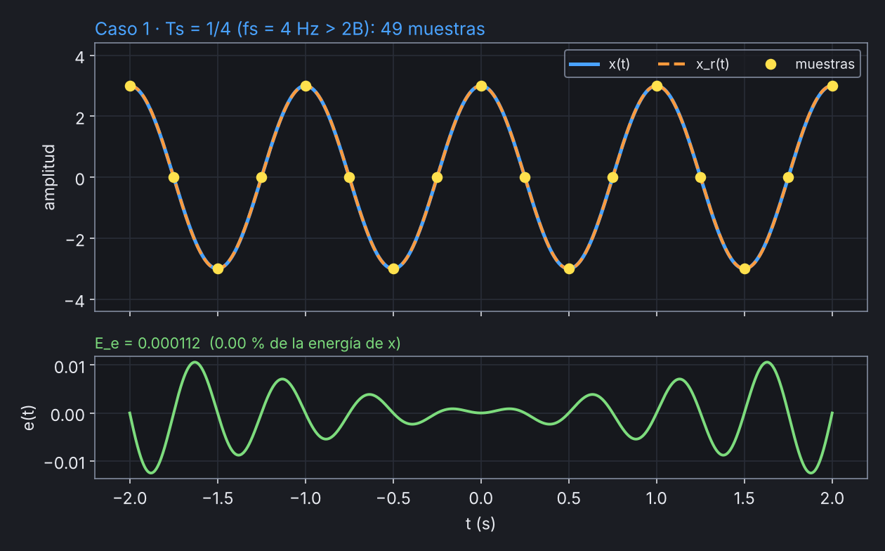
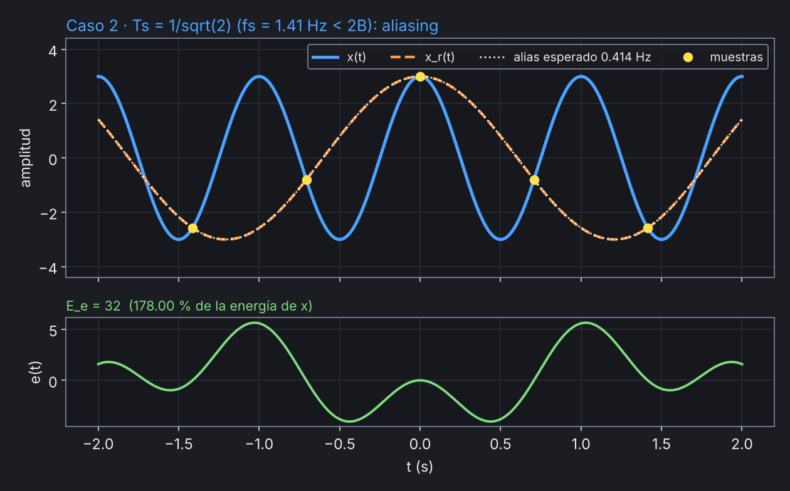
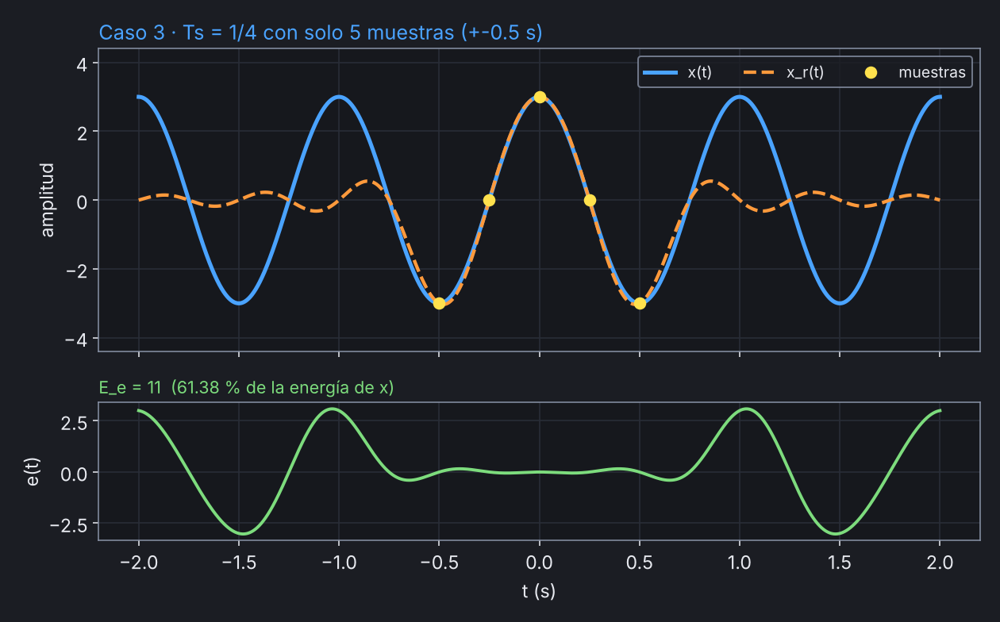
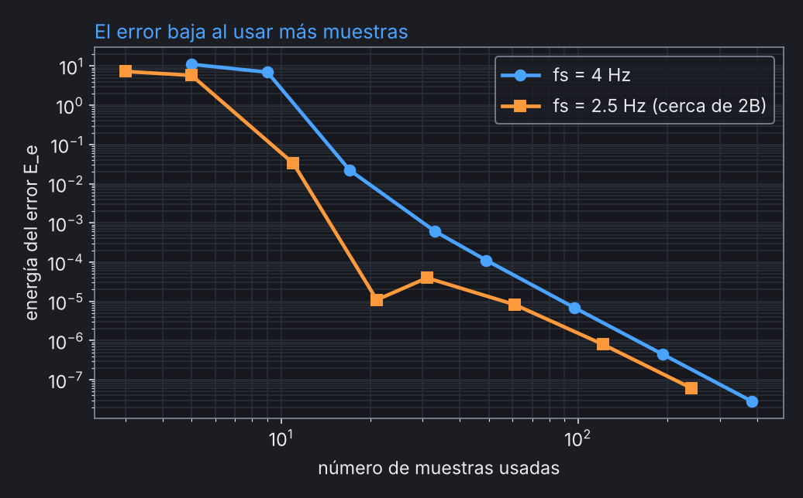

1. La señal es de banda limitada: \(X(f)=0\) para \(|f|>B\).
2. Se muestrea lo suficientemente rápido: \(f_s>2B\) (en clase: \(f_s\ge 2B\))
3. Se usa el filtro ideal: \(H(f)=T_s\,\rect_{f_s}(f)\).
Ejemplo de clase: \(x(t)=3\cos(2\pi t)\)
\(B=1\) Hz y \(T_s=1/4\Rightarrow f_s=4\) Hz \(>2B=2\) Hz
Error 1 · Capítulo 1Aliasing: dos señales, las mismas muestras
Si \(x_2[n]=e^{j(2\pi(f+1)n+\phi)}\), entonces:
$$x_2[n]=x_1[n]\,e^{j2\pi n}=x_1[n]$$
Ejercicio de clase: \(\cos\!\big(\tfrac{\pi}{6}n\big)\) y \(\cos\!\big(\tfrac{13\pi}{6}n\big)\) son la misma señal discreta, porque \(\tfrac{13\pi}{6}=\tfrac{\pi}{6}+2\pi\).
Con \(f_s=4\) Hz, \(\cos(2\pi t)\) y \(\cos(2\pi\cdot 3t)\) pasan por los mismos puntos. El reconstructor solo deja pasar \(|f|\lt f_s/2=2\) Hz y entrega la de 1 Hz.
Error 1 · aliasing en la reconstrucciónSi \(f_s<2B\), las réplicas se solapan
Las partes solapadas se suman y no se pueden separar.
Ejemplo de clase: \(x(t)=3\cos(2\pi t)\) con \(T_s=1/\sqrt2\), es decir \(f_s\approx1{,}41\) Hz \(<2B=2\) Hz.
La reconstrucción es una cosenoidal más lenta (\(\approx0{,}41\) Hz): otra señal.
Error 2 · Capítulo 3El filtro ideal no se puede construir
No es causal
\(h(t)=\sinc(t/T_s)\) existe también para \(t<0\): la salida dependería de momentos futuros.
En clase, \(y(t)=x(t+2)\) es no causal.
Infinitas muestras
La sinc decae lento. Si cortamos la suma en un número finito de muestras, queda error, sobre todo en los bordes.
Banda no limitada
Una señal real tiene espectro por encima de \(f_s/2\): ese aliasing no se deshace. Hay que filtrar antes de muestrear.
Capítulo 1 · EnergíaMedimos el error con la energía
Energía de clase: \(E_s=\displaystyle\int_{-\infty}^{\infty}s^2(t)\,dt\), y en discreto \(E=\displaystyle\sum_n s^2[n]\).
Aplicada a la diferencia entre la señal y su reconstrucción:
3. Como en el aliasing de clase (sumar \(2\pi n\) a la fase no cambia la señal discreta):
$$\cos(2\pi\cdot0{,}7071\,n)=\cos\big(2\pi\,(0{,}7071-1)\,n\big)=\cos(2\pi\cdot0{,}2929\,n)$$
4. Frecuencia que reconstruye el filtro:
\(f_a=0{,}2929\,f_s=0{,}4142\) Hz, o sea \(x_r(t)=3\cos(2\pi\cdot0{,}4142\,t)\neq x(t)\).
Se comprueba con Python en la simulación (caso 2): frecuencia medida 0,4140 Hz y amplitud 3,000.
Simulación en Python · 1 de 4Código
import numpy as np
def x(t): # x(t) = 3 cos(2 pi t)
return 3 * np.cos(2 * np.pi * t)
def reconstruir(t, tk, xk, Ts): # x_r(t) = sum x[k] sinc((t-k Ts)/Ts)
return np.sinc((t[:, None] - tk[None, :]) / Ts) @ xk
Ts, T = 1/4, 6 # caso 1: fs = 4 Hz, muestras de -6 a 6 s
K = int(T / Ts)
k = np.arange(-K, K + 1)
tk, xk = k * Ts, x(k * Ts) # muestras
t = np.linspace(-2, 2, 4001)
xr = reconstruir(t, tk, xk, Ts) # reconstrucción con sincs
e = x(t) - xr # error
Ee = energia(e, t) # integral de e^2 (trapecio)
Correspondencia con la teoría
np.sinc es la sinc de clase: \(\sin(\pi x)/(\pi x)\).
La multiplicación matricial es la suma \(\sum_k x[k]\,\sinc(\cdot)\).
Ee es \(E_e=\int e^2(t)\,dt\) de la energía de clase.
Archivo completo: simulacion/reconstruccion_sinc.py. Funciona también pegado en Google Colab.
Simulación en Python · 2 de 4Resultados: Nyquist y aliasing

Caso 1 · \(f_s=4\) Hz, 49 muestras: \(E_e=1{,}12\times10^{-4}\) (0,0006 % de \(E_x=18\)).

Caso 2 · \(f_s=1{,}41\) Hz, 113 muestras: \(E_e=32{,}0\) (178 % de \(E_x\)). Frecuencia medida 0,4140 Hz (esperada 0,4142 Hz).
Simulación en Python · 3 de 4Resultados: error por truncar la suma

Caso 3 · \(f_s=4\) Hz pero solo 5 muestras (±0,5 s): \(E_e=11{,}05\) (61,4 %).

Energía del error contra número de muestras (escala log-log).
Simulación en Python · 4 de 4Tablas de resultados
A · Más muestras (\(f_s=4\) Hz)
Muestras de −T a T
Nº
\(E_e\)
±0,5 s
5
11,05
±2 s
17
0,0223
±6 s
49
1,12×10⁻⁴
±12 s
97
6,94×10⁻⁶
±24 s
193
4,42×10⁻⁷
±48 s
385
2,80×10⁻⁸
B · Distinta \(f_s\) (muestras de −6 a 6 s)
\(f_s\) (Hz)
\(f_s>2B\)
\(E_e\)
% de \(E_x\)
1,414
no
32,3
179,4
2,5
sí
3,96×10⁻⁵
< 0,001
3
sí
1,41×10⁻⁴
< 0,001
4
sí
1,12×10⁻⁴
< 0,001
6
sí
5,53×10⁻⁵
< 0,001
8
sí
3,20×10⁻⁵
< 0,001
\(E_x=18\) es la energía de \(x(t)\) en la ventana \([-2,2]\) s. Valores obtenidos con reconstruccion_sinc.py (también en simulacion/resultados.txt).
Interpretación de resultadosQué nos dicen los números
Con \(f_s>2B\) la reconstrucción es prácticamente exacta: en el caso 1, \(E_e\) es el 0,0006 % de \(E_x\). Lo que queda es error de truncar la suma, no de Nyquist.
Con \(f_s\lt 2B\) el error no se arregla con más muestras: pasar de 17 a 113 muestras deja el error en 179 % y 178 % de \(E_x\). La reconstrucción es otra señal, de 0,414 Hz, como predijo el ejemplo 3 de 3.
Truncar sí se corrige con más muestras: con \(f_s=4\) Hz, 5 muestras dan 61 % de error, y desde ±12 s cada vez que se duplica el intervalo la energía del error baja unas 16 veces.
Subir \(f_s\) por encima de \(2B\) no mejora de forma ordenada con el mismo intervalo: manda el efecto de borde del truncado (todos quedan por debajo de 0,001 %).
Nyquist (\(f_s>2B\)) es la condición necesaria; tener suficientes muestras y un buen filtro reduce el error restante.
Demostración interactivaReconstruir \(x(t)=3\cos(2\pi f_0 t)\) con sincs
ConclusionesLo que nos llevamos
Reconstruir es quedarse con una réplica del espectro: multiplicar por un rectángulo \(H(f)\).
Por dualidad, en el tiempo eso es sumar sincs, una por muestra, y la suma pasa por todos los puntos.
Es perfecta si la señal es de banda limitada y \(f_s>2B\); si no, hay aliasing.
La simulación en Python lo confirma: con \(f_s=4\) Hz el error es 0,0006 % de \(E_x\); con \(f_s\approx1{,}41\) Hz se reconstruye otra frecuencia (0,414 Hz).
En la práctica el filtro no es ideal y las muestras son finitas: queda un error que medimos con su energía.